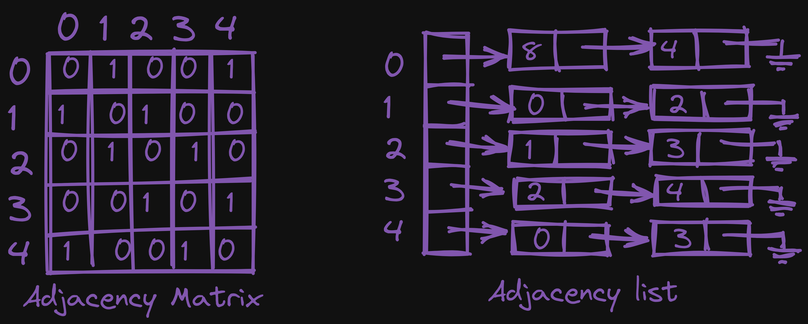
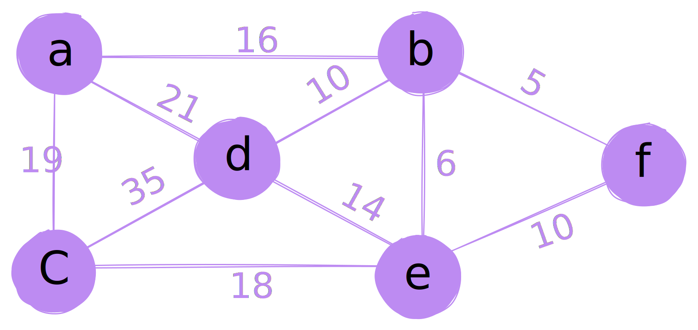
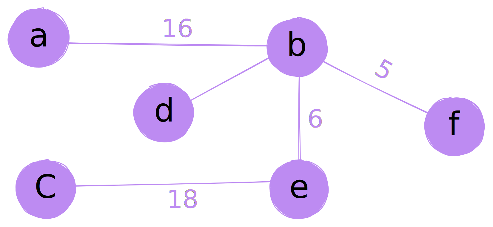

DSA
1.A. 6 Marks
i) Correlate any 3 advantages of DFS
- Space efficiency: One of the main advantages of depth first search (DFS) is that it uses a stack data structure to keep track of the nodes to be visited, which allows it to use less memory than other search algorithms such as breadth first search (BFS) which uses a queue data structure. This makes DFS a more space-efficient option for searching large or complex graphs.
- Backtracking: DFS has the ability to backtrack, which means that it can easily retrace its steps and explore alternative paths if the current path leads to a dead end. This is an important feature when searching for a specific target or solution in a graph, as it allows the algorithm to explore multiple paths without having to start the search from the beginning.
- Can be used to find all solutions to a problem: DFS can also be modified to find all solutions to a problem, such as finding all paths through a maze or all possible configurations of a puzzle. This makes it useful for solving problems where there are multiple solutions.
- More example: https://www.youtube.com/watch?v=iaBEKo5sM7w
ii) Reframe the short note on hash table
A hash table is a data structure that stores key-value pairs and uses a hash function to map keys to indexes in an array. The main advantage of a hash table is that it can perform operations, such as insertion, deletion, and search, in an average O(1) time complexity. This makes hash tables an efficient data structure for searching and indexing large data sets.

Resources:
- https://khalilstemmler.com/blogs/data-structures-algorithms/hash-tables/
- https://youtu.be/ea8BRGxGmlA
iii) Explain waht are the different ways to represent the graph.

Adjacency Matrix (Array Representation)
An adjacency matrix is a way to represent a graph using a two-dimensional array, where the rows and columns represent the vertices of the graph, and the elements of the array represent the edges between the vertices.
For example, a simple undirected graph with 4 vertices (A, B, C, D) and 5 edges (A-B, B-C, C-D, D-A, A-C) can be represented using an adjacency matrix as follows:
Adjacency List (Linked List Representation)
An adjacency list is a way to represent a graph using a linked list, where each vertex in the graph is represented by a linked list of its adjacent vertices.
For example, a simple undirected graph with 4 vertices (A, B, C, D) and 5 edges (A-B, B-C, C-D, D-A, A-C) can be represented using an adjacency list as follows:
i) Relate any 2 applications of Graph.
- Web Crawlers: Graphs can be used to represent the structure of the World Wide Web, where the vertices represent web pages and the edges represent the links between them. Web crawlers use graph traversal algorithms to navigate through the web pages, discovering new pages and collecting information.
- Social Network Analysis: Graphs are widely used in social network analysis to represent relationships between individuals or groups. The vertices in the graph represent individuals or groups, and the edges represent the relationships between them. Social network analysis can be used to identify patterns and trends in the data, such as finding communities or influencers within the network.
ii) Write any 2 disadvantages of separate chaining.
- Increased Space Complexity: Separate chaining requires additional space to store the linked lists, which can lead to increased space complexity. As the number of collisions increases, the size of the hash table also increases, leading to more memory being used.
- Increased Time Complexity: With separate chaining, the time complexity for searching, inserting, and deleting elements in the hash table is no longer constant on average, but instead becomes linear with the length of the linked list. This happens because in worst case scenario, when all keys map to the same index, the algorithm needs to traverse the whole linked list to find the desired key.
iii) Compose the concept of addition of two polynomials.
Explain: Application of Linked List (Addition of Two Polynomials)
2. 5 Marks
i) Reframe the short note on Double Hashing.
Double Hashing is a technique used to resolve collisions in a hash table. It is a variation of open addressing method, where instead of using a single hash function to map a key to an index in the table, it uses two hash functions. The first hash function is used to find the initial index for a key and the second hash function is used to find the next index in case of a collision. The second hash function is chosen such that it guarantees a non-zero value, and also it's relatively prime to the size of the table, this way it guarantees to visit all the possible indices in the table. In this way, Double Hashing helps to spread out the keys that hash to the same value and reduce clustering in the table. Double Hashing requires more computation than linear probing, but it has a lower chance of clustering which can result in better performance.
Explain: Double Hashing
ii) Translate the given infix to postfix expression using stack ((A+B)*D)^(E-F)
| Infix | Stack | Postfix |
|---|---|---|
| ( | ( | |
| ( | (( | |
| A | (( | A |
| + | ((+ | A |
| B | ((+ | AB |
| ) | ( | AB+ |
| * | (* | AB+ |
| D | (* | AB+D |
| ) | AB+D* | |
| ^ | ^ | AB+D* |
| ( | ^( | AB+D* |
| E | ^( | AB+D*E |
| - | ^(- | AB+D*E |
| F | ^(- | AB+D*EF |
| ) | AB+D*EF-^ |
3. 5 Marks
i) Reframe any 5 characteristics of Good Hashing Function.
- Efficient: A good hashing function should be able to quickly and efficiently map a key to its corresponding index in the hash table.
- Distributes keys uniformly: A good hashing function should be able to distribute keys uniformly across the entire range of indices in the hash table, reducing the likelihood of collisions.
- Deterministic: A good hashing function should always produce the same output for the same input, allowing for easy retrieval of keys.
- One-Way: A good hashing function should be difficult to reverse, making it difficult for attackers to determine the original key.
- Sensitive to the input: A good hashing function should be sensitive to small changes in the input and produce different outputs for similar but not identical keys.
ii) Using Kruskal's algorithm find Minimum Spanning Tree for the following graph.

Minimum Spanning Tree using Kruskal's algorithm: 
Here how I made it: Kruskal's algorithm